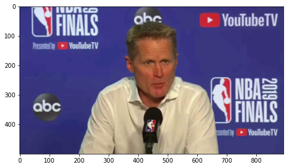
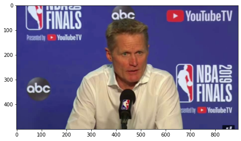
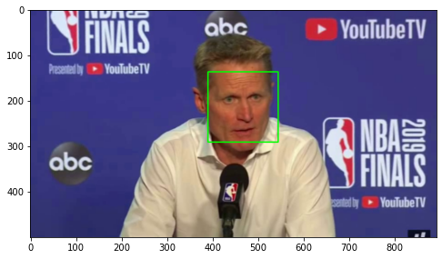
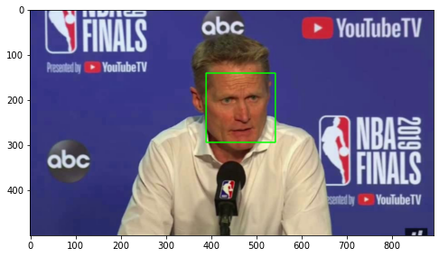
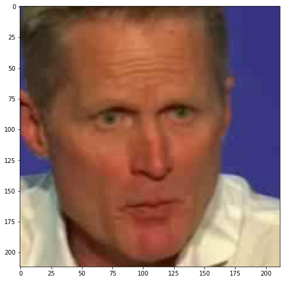
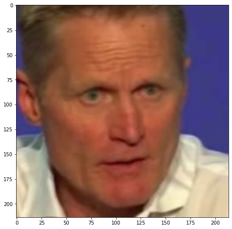

2. Análise Exploratória e Pré-processamento#
Datasets#
Os datasets serão armazenados no diretório data conforme a estrutura a seguir:
…
├── data <- Diretório de dados.
│ ├── external <- Diretório de dados externos(temporário).
│ │ └── input_video <- Diretório para armazenar o vídeo recebido via
│ │ upload para classificação.
│ │
│ ├── interim <- Diretório de dados em processamento (temporário).
│ │ └── input_face <- Diretório para armazenar os frames processados
│ │ do vídeo recebido via upload para classificação.
│ │
│ ├── processed <- Diretório de dados processados.
│ │ ├── dataset_celebdf <- Diretório de faces do dataset celebdf
│ │ │ └── real_face <- Diretório de faces reais
│ │ │ └── fake_face <- Diretório de faces falsas
│ │ │
│ │ ├── dataset_faceforensics <- Diretório de faces do dataset faceforensics
│ │ │ └── real_face <- Diretório de faces reais
│ │ │ └── fake_face <- Diretório de faces falsas
│ │ │
│ │ └── dataset_dfdc <- Diretório de faces do dataset dfdc
│ │ └── real_face <- Diretório de faces reais
│ │ └── fake_face <- Diretório de faces falsas
│ │
│ └── raw <- Diretório de dados brutos.
│ ├── dataset_celebdf <- Diretório de vídeos do dataset celebdf
│ │ └── real_video <- Diretório de vídeos reais
│ │ └── fake_video <- Diretório de vídeos falsos
│ │
│ ├── dataset_faceforensics <- Diretório de vídeos do dataset faceforensics
│ │ └── real_video <- Diretório de vídeos reais
│ │ └── fake_video <- Diretório de vídeos falsos
│ │
│ └── dataset_dfdc <- Diretório de vídeos do dataset dfdc
│ └── real_video <- Diretório de vídeos reais
│ └── fake_video <- Diretório de vídeos falsos
…
# Bibliotecas
import pandas as pd
from glob import glob
import cv2
import numpy as np
from IPython.display import HTML
from base64 import b64encode
import matplotlib.pyplot as plt
%matplotlib inline
from sklearn.model_selection import train_test_split
Captura de frames#
# Captura de Frames:
dataset = 'celebdf'
videos_reais = glob("../data/raw/dataset_"+ dataset +"/real_video/*.mp4")
count = 0
cap = cv2.VideoCapture(videos_reais[15])
ret,frame = cap.read()
while count < 3:
cap.set(cv2.CAP_PROP_POS_MSEC,(count*1000))
ret,frame = cap.read()
if count == 0:
image0 = frame
elif count == 1:
image1 = frame
elif count == 2:
image2 = frame
count = count + 1
def display_img(img):
fig = plt.figure(figsize=(8,8))
ax = fig.add_subplot(111)
img = cv2.cvtColor(img, cv2.COLOR_BGR2RGB)
ax.imshow(img)
frames_capturados = [image0,image1,image2]
for i in frames_capturados: display_img(i)


Detecção de faces#
face_cascade = cv2.CascadeClassifier('../src/features/haarcascades/haarcascade_frontalface_default.xml')
def detect_face(img):
face_img = img.copy()
face_rects = face_cascade.detectMultiScale(face_img,scaleFactor=1.3, minNeighbors=5)
for (x,y,w,h) in face_rects:
cv2.rectangle(face_img, (x,y), (x+w,y+h), (0,255,0), 2)
return face_img
for i in frames_capturados: display_img(detect_face(i))


Região de interesse#
#ROI
def ROI(img):
offset = 30
face_img = img.copy()
face_rects = face_cascade.detectMultiScale(face_img,scaleFactor=1.3, minNeighbors=5)
for (x,y,w,h) in face_rects:
roi = face_img[y-offset:y+h+offset,x-offset:x+w+offset]
return roi
for i in frames_capturados: display_img( ROI(i))


Função para aplicar a todos os videos:#
# Save Faces:
def save_faces(dataset,categoria,lista_videos):
for i in lista_videos:
cap = cv2.VideoCapture(i)
ret,frame = cap.read()
count = 0
try:
while count < 11:
cap.set(cv2.CAP_PROP_POS_MSEC,(count*1000))
ret,frame = cap.read()
image0 = frame
image0 = ROI(image0)
arquivo = i.replace("../data/raw/dataset_","").replace(dataset+"/"+categoria+"/","").replace(".mp4","")
arquivo_nome = "../data/processed/dataset_" + dataset +"/"+ categoria+ "/" + arquivo + "_" + str(count) + ".jpg"
cv2.imwrite(arquivo_nome,image0)
count = count + 1
except:
pass
# Celebdf
## Reais
dataset = 'celebdf'
pasta = 'real_video'
categoria = 'real_face'
lista_videos = glob("../data/raw/dataset_"+ dataset +"/"+pasta+"/*.mp4")
save_faces(dataset,categoria,lista_videos)
## Fakes
dataset = 'celebdf'
pasta = 'real_video'
categoria = 'fake_face'
lista_videos = glob("../data/raw/dataset_"+ dataset +"/"+pasta+"/*.mp4")
save_faces(dataset,categoria,lista_videos)
# faceforensics
## Reais
dataset = 'faceforensics'
pasta = 'real_video'
categoria = 'real_face'
lista_videos = glob("../data/raw/dataset_"+ dataset +"/"+pasta+"/*.mp4")
save_faces(dataset,categoria,lista_videos)
## Fakes
dataset = 'faceforensics'
pasta = 'fake_video'
categoria = 'fake_face'
lista_videos = glob("../data/raw/dataset_"+ dataset +"/"+pasta+"/*.mp4")
save_faces(dataset,categoria,lista_videos)
# dfdc
## Reais
dataset = 'dfdc'
pasta = 'real_video'
categoria = 'real_face'
lista_videos = glob("../data/raw/dataset_"+ dataset +"/"+pasta+"/*.mp4")
save_faces(dataset,categoria,lista_videos)
## Fakes
dataset = 'dfdc'
pasta = 'fake_video'
categoria = 'fake_face'
lista_videos = glob("../data/raw/dataset_"+ dataset +"/"+pasta+"/*.mp4")
save_faces(dataset,categoria,lista_videos)
Divisão Treino e Teste#
# categorizacao dos videos em treino e teste
for dataset in ['celebdf','faceforensics','dfdc']:
arquivo_metadados = "../data/raw/dataset_"+ dataset +"/metadados.csv"
#print(arquivo_metadados)
metadados = pd.read_csv(arquivo_metadados, sep=';',dtype=str)
#display(metadados.head())
#metadados = metadados.reset_index()
x = metadados.drop(columns=['label'])
y = metadados['label']
x_train, x_test, y_train, y_test = train_test_split(x, y, test_size=0.30, random_state=42, stratify=y)
treino = x_train.copy()
treino['label'] = y_train
treino['particao'] = 'treino'
teste = x_test.copy()
teste['label'] = y_test
teste['particao'] = 'teste'
#display(treino)
#display(teste)
metadados_id_part = pd.concat([treino,teste])
metadados_id_part = metadados_id_part.reset_index(drop=True)
metadados_id_part['video'] = metadados_id_part['video'].str.split("/",expand=True)[5]
metadados_id_part['video'] = metadados_id_part['video'].astype(str)
metadados_id_part.to_csv("../data/processed/dataset_"+ dataset +"/metadados_videos.csv",sep=";", index=False)
print('-'*50)
print(dataset)
display(metadados_id_part.head())
display(metadados_id_part['particao'].value_counts())
del metadados_id_part
--------------------------------------------------
celebdf
| video | descricao | label | particao | |
|---|---|---|---|---|
| 0 | id30_id29_0007.mp4 | FAKE | 0 | treino |
| 1 | id2_id23_0003.mp4 | FAKE | 0 | treino |
| 2 | id37_id29_0000.mp4 | FAKE | 0 | treino |
| 3 | id1_id35_0009.mp4 | FAKE | 0 | treino |
| 4 | id53_id51_0007.mp4 | FAKE | 0 | treino |
treino 4570
teste 1959
Name: particao, dtype: int64
--------------------------------------------------
faceforensics
| video | descricao | label | particao | |
|---|---|---|---|---|
| 0 | fs_087_081.mp4 | FAKE | 0 | treino |
| 1 | nt_266_252.mp4 | FAKE | 0 | treino |
| 2 | 246.mp4 | REAL | 1 | treino |
| 3 | fs_111_094.mp4 | FAKE | 0 | treino |
| 4 | nt_431_447.mp4 | FAKE | 0 | treino |
treino 3500
teste 1500
Name: particao, dtype: int64
--------------------------------------------------
dfdc
| video | descricao | label | particao | |
|---|---|---|---|---|
| 0 | bilnggbxgu.mp4 | REAL | 1 | treino |
| 1 | andaxzscny.mp4 | FAKE | 0 | treino |
| 2 | tejfudfgpq.mp4 | REAL | 1 | treino |
| 3 | emfbhytfhc.mp4 | FAKE | 0 | treino |
| 4 | aneclqfpbt.mp4 | FAKE | 0 | treino |
treino 560
teste 240
Name: particao, dtype: int64
len(dataframe_faces)
59208
# Lista de faces:
for dataset in ['celebdf','faceforensics','dfdc']:
#for dataset in ['celebdf']:
faces_reais = glob("../data/processed/dataset_"+ dataset +"/real_face/*.jpg")
faces_fakes = glob("../data/processed/dataset_"+ dataset +"/fake_face/*.jpg")
dataframe_faces_reais = pd.DataFrame( data = {"face": faces_reais, "label" : "1", "descricao": "REAL"})
dataframe_faces_fakes = pd.DataFrame( data = {"face": faces_fakes, "label" : "0", "descricao": "FAKE"})
dataframe_faces = pd.concat([dataframe_faces_reais, dataframe_faces_fakes])
dataframe_faces['video'] = dataframe_faces['face'].str.split("/",expand=True)[5]
dataframe_faces['video'] = dataframe_faces['video'].str.replace(r'(_[0-9]+.jpg)','',regex=True)
dataframe_faces['video'] = dataframe_faces['video'] + ".mp4"
metadados_video = pd.read_csv("../data/processed/dataset_"+ dataset +"/metadados_videos.csv", sep=';',dtype=str)
dataframe_faces = pd.merge(dataframe_faces,metadados_video, on=['video','label','descricao'], how='left' )
dataframe_faces.to_csv("../data/processed/dataset_"+ dataset +"/metadados_faces.csv",sep=";", index=False)
print('-'*50)
print(dataset)
display(dataframe_faces.head())
display(dataframe_faces['particao'].value_counts(dropna=False))
--------------------------------------------------
celebdf
| face | label | descricao | video | particao | |
|---|---|---|---|---|---|
| 0 | ../data/processed/dataset_celebdf/real_face/00... | 1 | REAL | 00001.mp4 | treino |
| 1 | ../data/processed/dataset_celebdf/real_face/00... | 1 | REAL | 00001.mp4 | treino |
| 2 | ../data/processed/dataset_celebdf/real_face/00... | 1 | REAL | 00001.mp4 | treino |
| 3 | ../data/processed/dataset_celebdf/real_face/00... | 1 | REAL | 00001.mp4 | treino |
| 4 | ../data/processed/dataset_celebdf/real_face/00... | 1 | REAL | 00001.mp4 | treino |
treino 41607
teste 17601
Name: particao, dtype: int64
--------------------------------------------------
faceforensics
| face | label | descricao | video | particao | |
|---|---|---|---|---|---|
| 0 | ../data/processed/dataset_faceforensics/real_f... | 1 | REAL | 001.mp4 | teste |
| 1 | ../data/processed/dataset_faceforensics/real_f... | 1 | REAL | 001.mp4 | teste |
| 2 | ../data/processed/dataset_faceforensics/real_f... | 1 | REAL | 001.mp4 | teste |
| 3 | ../data/processed/dataset_faceforensics/real_f... | 1 | REAL | 001.mp4 | teste |
| 4 | ../data/processed/dataset_faceforensics/real_f... | 1 | REAL | 001.mp4 | teste |
treino 34928
teste 15005
Name: particao, dtype: int64
--------------------------------------------------
dfdc
| face | label | descricao | video | particao | |
|---|---|---|---|---|---|
| 0 | ../data/processed/dataset_dfdc/real_face/aelfn... | 1 | REAL | aelfnikyqj.mp4 | treino |
| 1 | ../data/processed/dataset_dfdc/real_face/aelfn... | 1 | REAL | aelfnikyqj.mp4 | treino |
| 2 | ../data/processed/dataset_dfdc/real_face/aelfn... | 1 | REAL | aelfnikyqj.mp4 | treino |
| 3 | ../data/processed/dataset_dfdc/real_face/aelfn... | 1 | REAL | aelfnikyqj.mp4 | treino |
| 4 | ../data/processed/dataset_dfdc/real_face/aelfn... | 1 | REAL | aelfnikyqj.mp4 | treino |
treino 2558
teste 1220
Name: particao, dtype: int64
Dataset de Misto:#
# Leitura dos arquivos de metadados de cada dataset
metadados_celebdf = pd.read_csv("../data/processed/dataset_celebdf/metadados_faces.csv", sep=';',dtype=str)
metadados_faceforensics = pd.read_csv("../data/processed/dataset_faceforensics/metadados_faces.csv", sep=';',dtype=str)
metadados_dfdc = pd.read_csv("../data/processed/dataset_dfdc/metadados_faces.csv", sep=';',dtype=str)
# Junção dos 3 datasets:
metadados_todos = pd.concat([metadados_celebdf,metadados_faceforensics,metadados_dfdc])
metadados_todos = metadados_todos.reset_index(drop=True)
metadados_todos.drop(columns=['particao'], inplace=True)
metadados_todos.shape
(112919, 4)
# amostra:
metadados_todos['dataset'] = metadados_todos['face'].str.split('/', expand=True)[3]
metadados_todos['dataset'] = metadados_todos['dataset'].str.replace('dataset_','')
metadados_todos.head()
| face | label | descricao | video | dataset | |
|---|---|---|---|---|---|
| 0 | ../data/processed/dataset_celebdf/real_face/00... | 1 | REAL | 00001.mp4 | celebdf |
| 1 | ../data/processed/dataset_celebdf/real_face/00... | 1 | REAL | 00001.mp4 | celebdf |
| 2 | ../data/processed/dataset_celebdf/real_face/00... | 1 | REAL | 00001.mp4 | celebdf |
| 3 | ../data/processed/dataset_celebdf/real_face/00... | 1 | REAL | 00001.mp4 | celebdf |
| 4 | ../data/processed/dataset_celebdf/real_face/00... | 1 | REAL | 00001.mp4 | celebdf |
# verificando desbalanceamento
metadados_todos_videos = metadados_todos[['label','descricao','video','dataset']]
metadados_todos_videos = metadados_todos_videos.drop_duplicates(keep='first')
metadados_todos_videos['descricao'].value_counts()
FAKE 9525
REAL 1959
Name: descricao, dtype: int64
# Geração de um dataset balanceado(50% fakes e 50% reais)
tamanho_reais = len(metadados_todos_videos[metadados_todos_videos['descricao']=='REAL'])
videos_reais = metadados_todos_videos[metadados_todos_videos['descricao']=='REAL']
videos_fakes = metadados_todos_videos[metadados_todos_videos['descricao']=='FAKE']
videos_fakes = videos_fakes.sample(frac = 1).head(tamanho_reais)
metadados_dataset_misto = pd.concat([videos_fakes,videos_reais])
metadados_dataset_misto = metadados_dataset_misto.reset_index(drop=True)
# verificando balanceamento
metadados_dataset_misto['descricao'].value_counts()
FAKE 1959
REAL 1959
Name: descricao, dtype: int64
# Particionamento treino e teste
x = metadados_dataset_misto.drop(columns=['label'])
y = metadados_dataset_misto['label']
x_train, x_test, y_train, y_test = train_test_split(x, y, test_size=0.30, random_state=42, stratify=y)
treino = x_train.copy()
treino['label'] = y_train
treino['particao'] = 'treino'
teste = x_test.copy()
teste['label'] = y_test
teste['particao'] = 'teste'
metadados_id_part = pd.concat([treino,teste])
metadados_id_part = metadados_id_part.reset_index(drop=True)
dataset_misto = pd.merge(metadados_todos, metadados_id_part, how='left', on=['descricao','video','dataset','label'])
dataset_misto = dataset_misto[dataset_misto['particao'].isnull()==False]
dataset_misto = dataset_misto.sample(frac = 1).reset_index(drop=True)
dataset_misto.to_csv("../data/processed/dataset_misto/metadados_faces.csv",sep=";", index=False)
dataset_misto.head()
| face | label | descricao | video | dataset | particao | |
|---|---|---|---|---|---|---|
| 0 | ../data/processed/dataset_faceforensics/real_f... | 1 | REAL | 878.mp4 | faceforensics | treino |
| 1 | ../data/processed/dataset_faceforensics/real_f... | 1 | REAL | 459.mp4 | faceforensics | treino |
| 2 | ../data/processed/dataset_faceforensics/real_f... | 1 | REAL | 055.mp4 | faceforensics | treino |
| 3 | ../data/processed/dataset_celebdf/real_face/id... | 1 | REAL | id13_0009.mp4 | celebdf | teste |
| 4 | ../data/processed/dataset_celebdf/real_face/id... | 1 | REAL | id8_0009.mp4 | celebdf | treino |